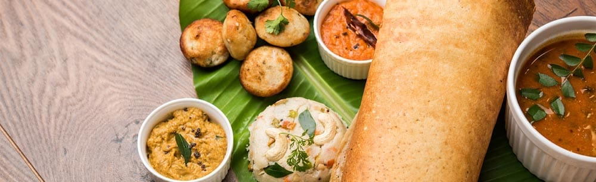
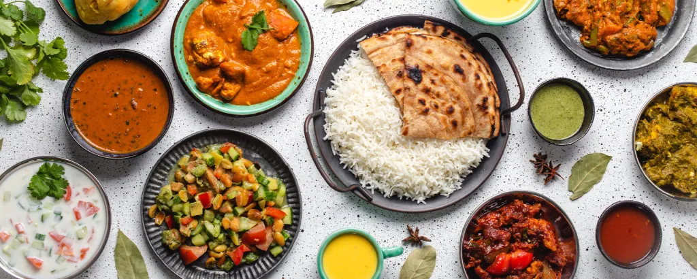

Breakfast is the first meal of the day usually eaten in the morning. The word in English refers to breaking the fasting period of the previous night. It is very important in Asia.
It is usually a savoury dish, consisting of protein (such as meat), starchy foods (such as potatoes), and a vegetable or salad. It is usually eaten around 2:00 pm.
Dinner usually refers to what is in many Western cultures the biggest and most formal meal of the day. Historically, the largest meal used to be eaten midday.
We are the leading restaurant in South Asia. We are providing Breakfast, Lunch, and Dinner 24/7. You can order food through the digital platforms. Our main target is to provide good food, satisfy customers, and make a friendship with customers. You can contact us for future inquiries.
Address: BenStokes Street London.
TP: 9090876532
Email: benidocker@gmail.com